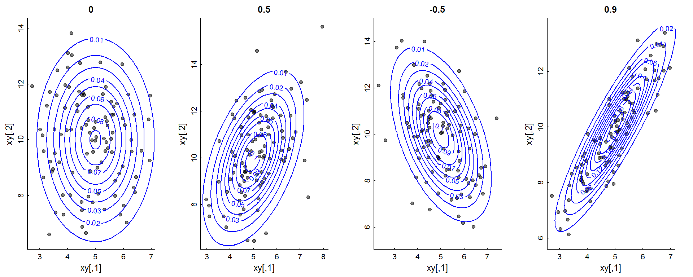
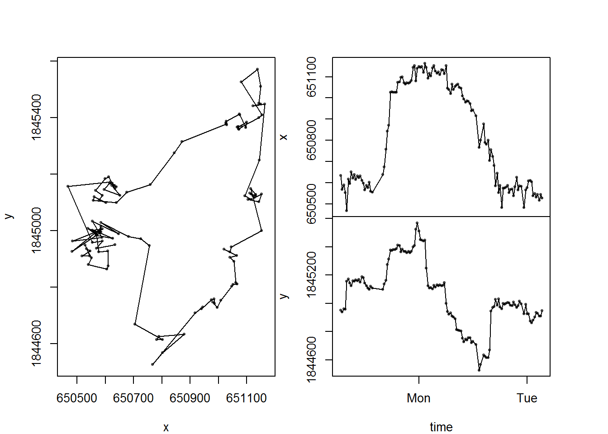
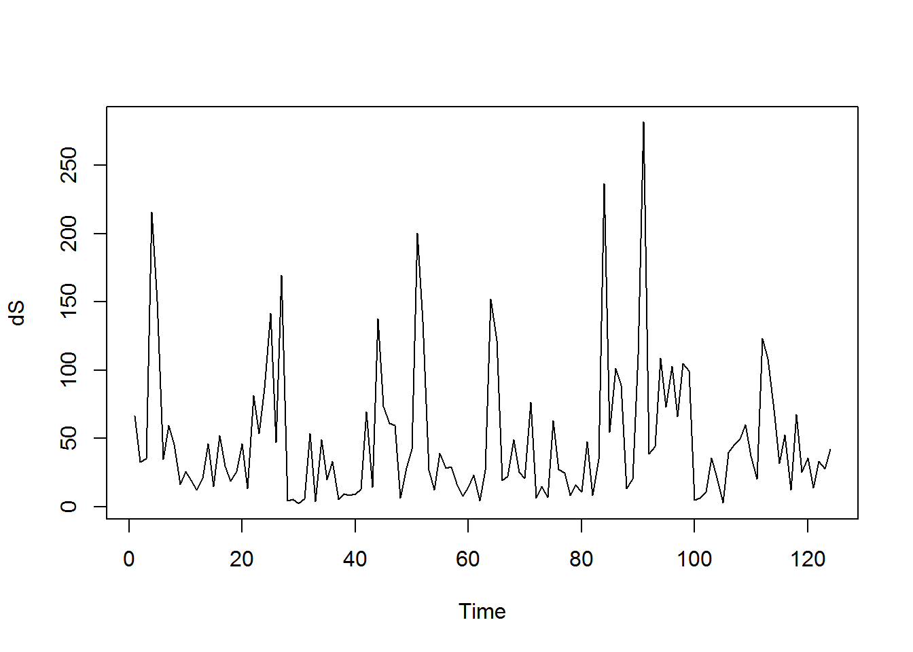
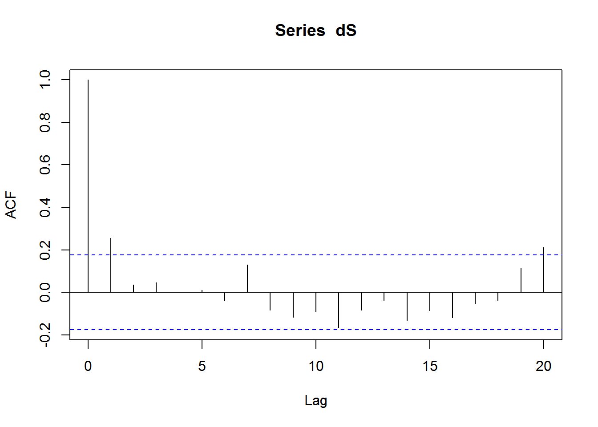

elieslides::pars()par(mfrow =c(1,4), xpd =NA)require(MASS)library(mnormt)mus <-c(5,10)sigmas <-c(1,3)rhos <-c(0,.5,-.5,.9)Sigma <-matrix(0, nrow =2, ncol =2)diag(Sigma) <- sigmasx <-seq(mus[1] -3*sigmas[1], mus[1] +3*sigmas[1], length =1e2) y <-seq(mus[2] -3*sigmas[2], mus[2] +3*sigmas[2],length =1e2) for(rho in rhos){ Sigma[1,2] <- Sigma[2,1] <- rho*sqrt(prod(sigmas)) xy <-mvrnorm(100, mus, Sigma = Sigma) f <-function(x, y, ...) dmnorm(cbind(x, y), mean = mus, ...) z <-outer(x, y, f, varcov = Sigma)plot(xy, pch =19, col =rgb(0,0,0,.5), main = rho, asp =1)contour(x,y,z, add =TRUE, col ="blue")}

Analyze some movement data
require(adehabitatLT)# See all the data in the package by running:## > data(package = "adehabitatLT")data(mouflon) # loads the data. mouflon <-as.data.frame(mouflon[[1]][,1:3])str(mouflon)
'data.frame': 135 obs. of 3 variables:
$ x : num 650634 650569 650589 650554 650468 ...
$ y : num 1844951 1844938 1844963 1844959 1845157 ...
$ date: POSIXct, format: "2003-11-02 06:40:00" "2003-11-02 07:00:00" ...
mouflon <-na.omit(mouflon)require(marcher)with(mouflon, scan_track(x = x, y = y, time = date))

names(mouflon)
[1] "x" "y" "date"
dS <-Mod(diff(mouflon$x + 1i*mouflon$y))hist(dS)
plot.ts(dS)

Is there auto-correlation?
acf(dS)

Perhaps / probably! But the distribution is non-normal!
elieslides::pars()par(mfrow =c(1,3))qqnorm(dS, main ="dS")qqnorm(log(dS), main ="log(dS)")acf(log(dS))
gls cannot deal with non-normal data but is excellent for autocorrelation structure
glmmTMB can fit generalized linear models with autocorrelation … BUT does not provide likelihoods of AIC to compare with. But here, we can use a gamma distribution for our steps, which is quite nice. Also you can do this with binomial or Poisson data.
require(glmmTMB)dummy <-rep(1, length(dS))fit2 <-glmmPQL(dS ~1, random =~1|dummy, family ="Gamma", correlation =corAR1())